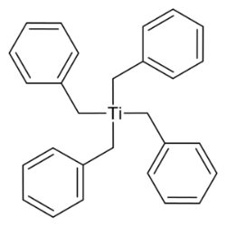
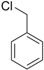

四苄基钛的介绍
四苄基钛是一种金属有机化合物，化学式为(C6H5CH2)4Ti，也写作TiBn4。
四苄基钛的合成路线
- 由苄基氯化镁和四氯化钛在乙醚中反应得到。
- 二苄基镁和四氯化钛或四丁醇钛在乙醚中反应，也能得到产物。
实验部分
[!Warning]
苄基氯有强烈刺激性
四氯化钛遇空气强烈水解
乙醚极易燃易爆
所需试剂和仪器
试剂
- 苄基氯
- 四氯化钛
- 乙醚
- 镁
仪器
- 电子秤
- 烧杯
- 三口烧瓶
- 橡胶塞
- 铁架台
- 温度计
- 漏斗
- 滤纸
- 抽滤装置
- 恒压滴液漏斗
- 磁力搅拌机&搅拌子
步骤
- 我也没合成过四苄基钛，随便瞎写。
 - 先把
苄基氯和镁加入三口烧瓶，隔绝空气后开始搅拌，这一步是合成苄基氯化镁，一种格氏试剂
 - 搅拌下缓慢滴入
四氯化钛，你会看到有红色的四苄基钛产生并消失。这可能是没做好隔绝空气和没用氮气保护上
备注
如果您遵循本指南的制作流程而发现问题或可以改进的流程，请提出 Issue 或 Pull request 。